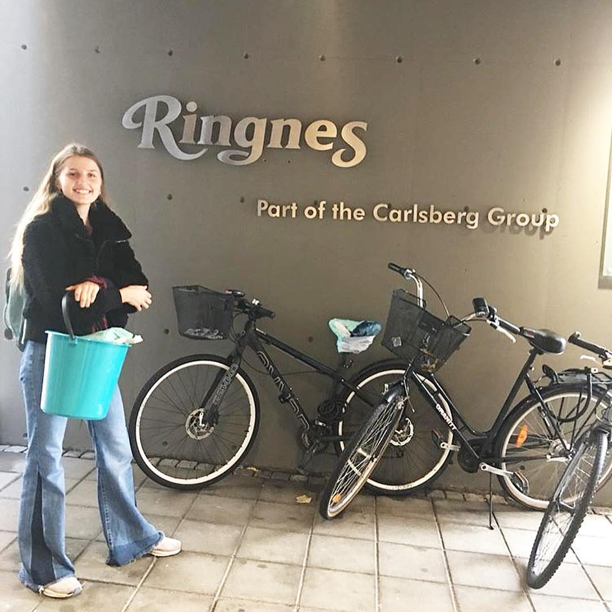

@beerbud.eb

Kort sagt er Beerbud en torvfri jorblanding laget på mesk og kaffegrut. Fordi den er torvfri er den mye mer miljøvennlig enn annen
hagejord som i dag finnes på markedet.
Torv er et organisk materiale som finnes i nesten all hagejord i dag. I våtområdene hvor torven ligger er det mye karbon. Når torven da blir gravd opp slippes det ut mye CO2 noe som er dårlig for miljøet, i tillegg til at man ødelegger tilholdsstedet til mange dyr og insekter. Flere av disse artene er i dag utrydningstruet.
Beerbud har derfor som mål å være en torvfri jordblanding. I stedet for torv bruker vi mesk og kaffegrut som næringskilde og sand som en base for å lage en egnet hagejordblanding.
Både kaffegrut og mesk er næringsrike avfallsprodukter som ofte blir kastet. Begge kan brukes til mye, men blir vanligvis ikke utnyttet. Mesk er et avfallsprodukt fra ølbrygging og er det du kan se på bildet under.

Beerbud er et mye bedre alternativ for miljøet i forhold til andre typer hagejord som i dag finnes på markedet. Blant annet er Beerbud med på å bygge bærekraftige byer og samfunn, er en del av ansvarlig forbruk og produksjon og det minimerer utslipp av skadelig klimagasser noe som vil gjøre at det forebygger klimaendringene. Mesken vi skal bruke kommer fra nærmiljøet noe som betyr at vi også kutter mulige utslipp fra transport.
Vil du lære mer kan du sjekke ut denne siden for mer informasjon og tips til gode nettsider å lese videre på.
For å kjøpe en pose med Beerbud hagejord kan du bestille i nettbutikken vår.
Beerbud EB er en elevbedrift fra Oslo Montessori skole funnet opp, laget og utviklet av fem jenter. Vi jobber for å lage en torvfri og dermed mer miljøvennlig hagejord. For oppdateringer følg oss på instagram eller se etter oppdateringer på bloggen vår.
Vi har jobbbet med dette prosjektet på skolen siden oktober 2018.